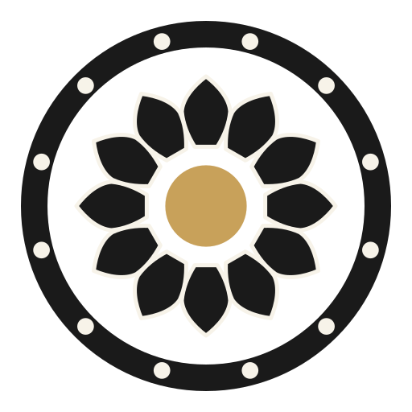
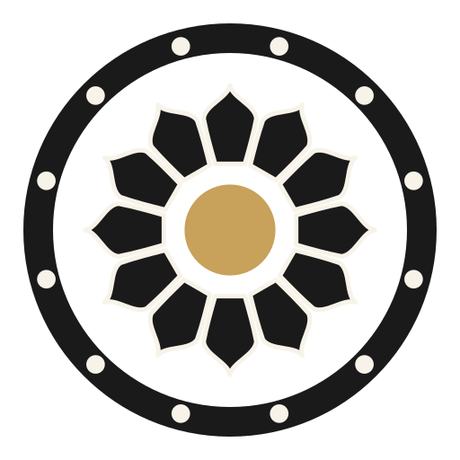
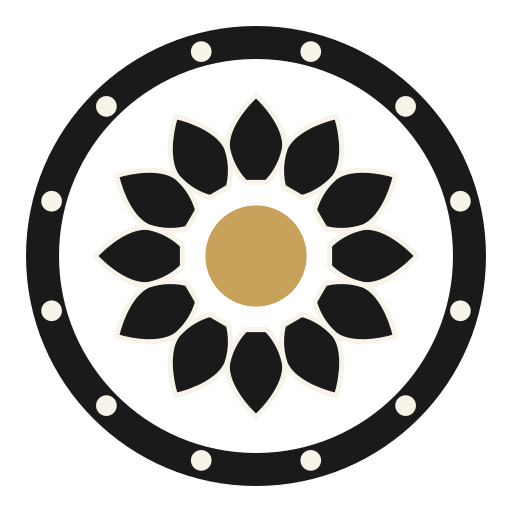
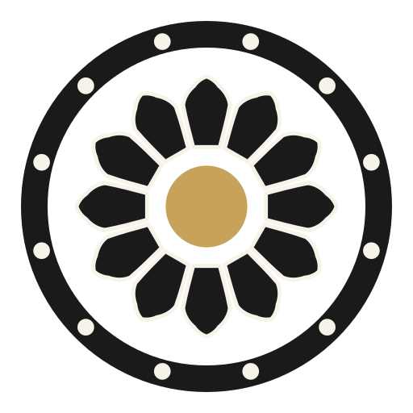
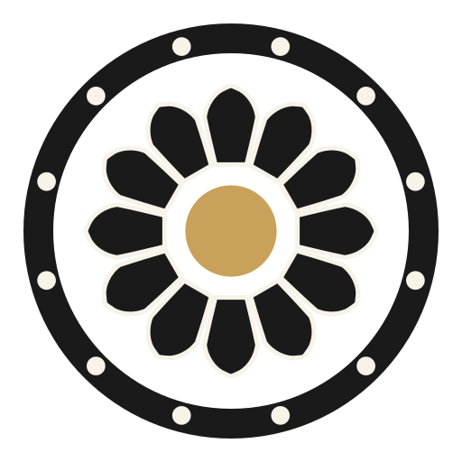

64
64
E · patra
Your pick, unchanged — the anchor everything below is bred from. Fills its twelfth, a seam apart, crown of points.
Your pick, developed. Every variant keeps E's DNA — the petal fills its whole twelfth, a seam apart, heavy enough to survive 32 px — and varies only how botanical the outline becomes. E itself leads, gold-framed, unchanged. Same frozen frame throughout: base on the jaladhari, tips at .70 R, twelve at 30°, the Shivalinga gold at the hub. Single petal · the twelve · in shila · 64/32 px.
64
E · patra
Your pick, unchanged — the anchor everything below is bred from. Fills its twelfth, a seam apart, crown of points.

E1 · padma
The broad marquise — E's full mass but on completely continuous curves: no straight sides, belly at the middle, an even swell and an even taper. The most lotus of the family.

E2 · agni
The flame — E's body, but the tip finishes in an ogee: the line breathes inward before rising to the point, the way carved stone petals do. Bold below, sacred fire above.

E3 · mukta
The pinched base — petals attach narrow, as real petals do, then swell fast to E's full width. Around the hub, twelve dark rays open between the bases: the corolla starts to radiate.

E4 · hridaya
The folded tip — E's mass with a soft shoulder before the point, like the folded-over edge of a petal floating on water. The subtlest change; look at the crown.
E5 · antara
E's exact silhouette, carrying a carved inner echo — the petal-within-petal cut into every temple lotus plinth. The silhouette you already chose; the craft added inside it.

E6 · purna
The full bloom — E's mass under a rounded crown that closes in a small nib instead of a spike. The softest of the family while staying just as heavy.